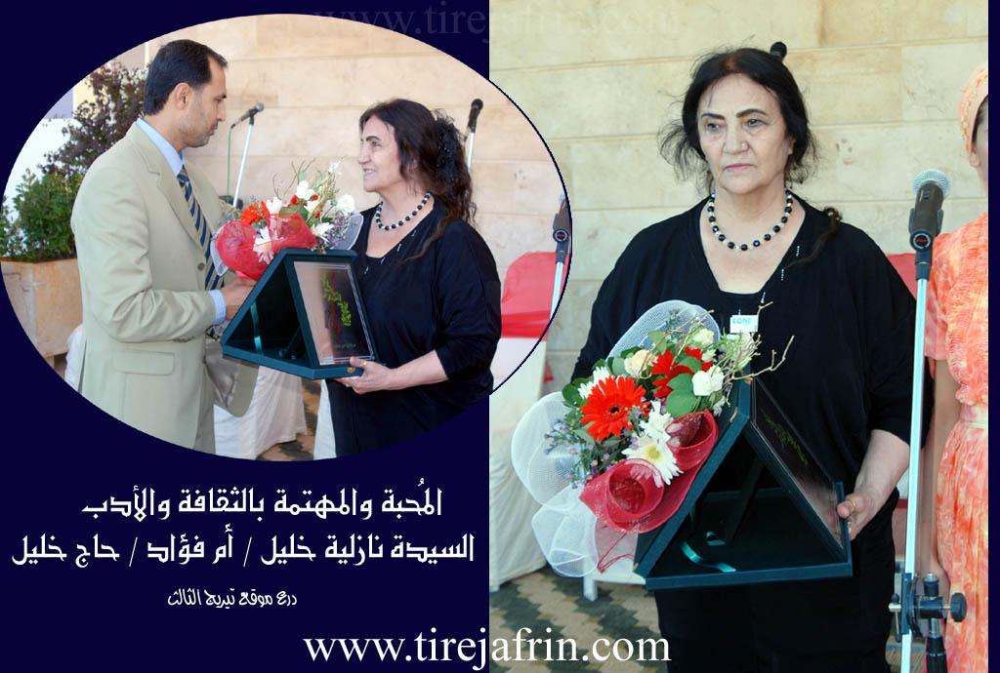
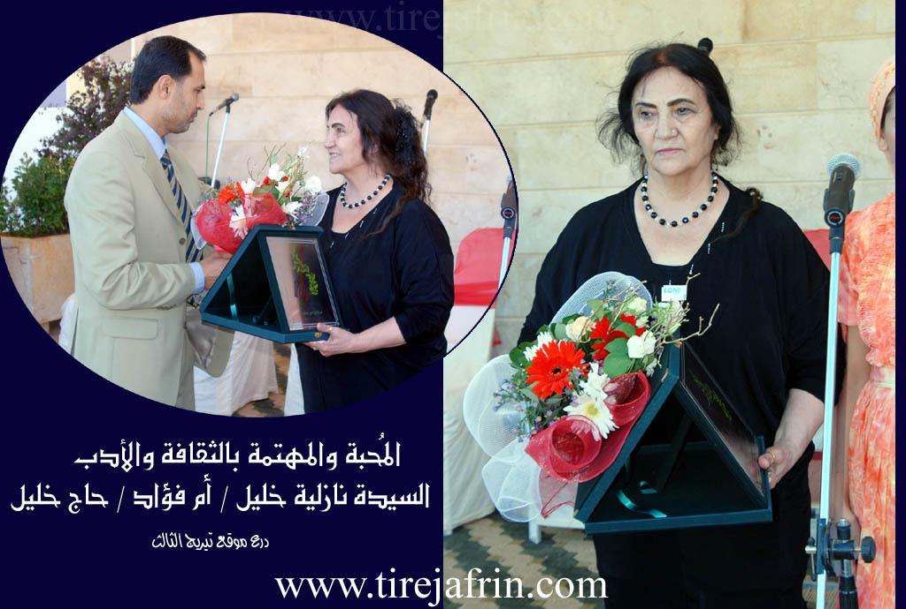

General Information
Nahiya (Subdistrict)
Rajo
Alternative Spellings
Haj Khalil, Heşxelîl, Xec Xelîl, حاج خليل
Photos
 

Summaries
I. Summary from TirejAfrin Site
# Ĥec Xelîl (حاج خليل)
Villages of Rajo District (راجو) / Reco
Haj Khalil (حاج خليل) - Ĥec Xelîl
According to the book 'جبل الكرد' 'Mountain of the Kurds' / Afrin City / Geographic Study:
Ĥec Xelîl, Haj Khalil (حج خليل) /4033N – 267ha - 2km - 640m/:
- The origin of the name "Xec Xelîl" (خَجّ خليل) Xec Xelîl, is a compound of two names: the first feminine "Xaj" (خج) from Khadija (خديجة) and the second "Khalil" (خليل), both first residents of the village. The letter "خ" in Xec changed to "ح" for ease of pronunciation, though residents of neighboring villages and village inhabitants still pronounce the name in its old form, i.e., Xaj Khalil (خج خليل).
- A large village located on a calcareous plateau, it is a prosperous village. Near its northwest in Mîra Mountain (جبل ميرا) there is iron ore.
According to the book 'عفرين.... نهرها وروابيها الخضراء' 'Afrin... Its River and Green Hills':
Haj Khalil (حاج خليل): A village in Kurdish Mountain (جبل الكرد) belonging to Rajo District (ناحية راجو), Afrin City region (منطقة عفرين), Aleppo Governorate (محافظة حلب).
It is a large village located on a wide, undulating summit of a calcareous plateau, overlooking to the east agricultural lands with alluvial soil. It is 5 km from the town of Rajo (راجو) towards the east, surrounded by slopes from three directions (western, eastern, southern) except the northern direction which is bounded by a high mountain chain and the villages of Mamalî (مامالي) and Holîlê (هوليلو), to the south by a slope, fertile plain, railway line and the village of Musik Oba Si (موسيك أوبه سي), to the east by a slope, valley and 1 km away the village of Kuranli (كورانلي), and to the west by a slope, plain and highway (going and coming) and the town of Rajo (راجو). The number of its houses is about 250 houses and its age is about 500 years. Its houses are stone-clay with wooden roofs, while the modern ones are concrete that developed urbanistically so that modern villa construction predominates in the village center. It has an electricity network, drinking water, elementary and preparatory schools, old mosque in the village center, some commercial shops and telephone network taken from the town of Rajo (راجو). The municipality was established in 1983. In the village center there is a square called President Hafez Al-Assad Square (ساحة الرئيس حافظ الأسد), and it has several olive oil presses. Its residents work in rainfed agriculture on an area of 267 hectares (olives, grains, legumes and grape trees) in addition to raising sheep and goats. It connects to the district by a paved highway to the village center. There is an Arc of Triumph (قوس النصر) on the western side of the village, considered the most beautiful entrance in the Afrin City region. Currently most of its residents are present in the cities of Aleppo (حلب) and Afrin City (عفرين) and come to the village for vacation and olive harvest. Among its most important families: (Mohammed Hanif family (عائلة محمد حنيف) - Al Rashoo (آل رشو) - Al Salman (آل سلمان) - Al Habbo (آل حبو) - Al Aala (آل عاله)) and they are the first to inhabit the village. The village of Haj Khalil (حاج خليل) is considered one of the old villages in the region.
Village Mukhtar: Mohammed Ali Rashid Bilal (محمد علي رشيد بلال).
Among the holders of higher degrees in the village: Salah Sheikho (صلاح شيخو) / PhD in Orthopedic Surgery / Russia (روسيا) - Dr. Aliya Mohammed Khalil (الدكتورة علياء محمد خليل). It is mentioned that artist Samir Ali (سمير علي) is from the sons of this village and among the village people working in the artistic field: artist Barwar (بروار) - oud player Laound (لاوند) - oud player Hafal Habbo (هفال حبو) - oud player Mustafa Habbo (مصطفى حبو) - among the first oud makers in the region Mr. Mamo (السيد مامو) - poet Nadir Balow (Habbo) (نذير بالو (حبو)) - oud player Kamiran Habbo (كميران حبو) - organ player Ahmad Rashid (Ahmad Net) (أحمد رشيد (أحمد نت)) - Ahmad Rankin (أحمد رنكين) - Mrs. Nazlia Khalil (Um Fuad) (السيد نازلية خليل (أم فؤاد)) who printed the divan of poet Hamid Badrukhan (حامد بدرخان) at her own expense.
Information Sources:
- Book 'جبل الكرد' 'Mountain of the Kurds' (Afrin City) Geographic Study by Dr. Mohammed Abdo Ali (الدكتور محمد عبدو علي).
- Book: 'عفرين.... نهرها وروابيها الخضراء' 'Afrin... Its River and Green Hills' by writer Abdulrahman Mohammed (عبدالرحمن محمد) from Qatmah village (قرية قطمه).
- Studies by Tirej Soft Center (مركز تيريج سوفت) / Abdulrahman Haji Othman (عبدالرحمن حاجي عثمان)
- Some village residents.
Prepared and implemented by: Tirej Afrin website manager: Abdulrahman Haji Othman (عبدالرحمن حاجي عثمان)
20/12/2013
II. Summary from Ax û Walat Transcript
The village of Heşxelîl was founded approximately 225 years ago (03:29, 03:51) by Memik, son of Heşxelîl, who came from Entab (Antep/Dîlok) (03:44-03:49). The initial settlement was possibly at a place called Serto Korê before moving to the current location (03:58-04:05). In 1914, conflicts involving Armenians occurred, and an Armenian family also settled in the village (02:23-02:29, 06:46). Before the current inhabitants, a family known as Mola Teku lived there (05:54). Over time, other families, including Goçer people from Guliyê Cêrîn and families originating from Şençelî, settled in the village (05:34, 06:04-06:39). The nearby mountain, Çiyayê Mîro, is named after a Mîr (Emir) who historically resided there and had a center in the area (04:10, 07:35). A Russian company explored for iron ore around 1956-1959 (07:20-07:28). The village has been administratively linked to Raco since 1936 (07:56) and officially became a municipality about 20-25 years before the recording (08:10). During the French Mandate period, some villagers worked as contractors, and there was nationalist/revolutionary activity (11:23, 12:47). Historically, the village served as an educational and religious center for surrounding villages that lacked schools or mosques (13:07-13:15). Before widespread access to doctors, local healers practiced in the village (14:25); one villager travelled to Beirut, Lebanon, during the French Mandate for medical reasons (14:33). The village lacked grid electricity until about 20-25 years before the recording; prior to that, generators were used, starting around 1973 (27:04, 27:08, 28:05, 28:11). Craftsmen who made items like saddlebags existed in the past but are no longer present (33:27). The shrine of Mehmed Elî is considered ancient (39:59), with some speculating the figure was an Ottoman or a Yezidi (09:03-09:09).
V. Links
- Tirejafrin
http://www.tirejafrin.com/site/kura%20afrin%20%20%20Reco%20-%20haj%20xalil.htm - Ax û Welat
https://www.youtube.com/watch?v=zY990bDOFVw - Drone
https://www.youtube.com/watch?v=SS8sQEoknJM - Videos
https://www.youtube.com/watch?v=bazvy5yMFnk
https://www.youtube.com/watch?v=dSSsfsfB0Go
https://www.youtube.com/watch?v=9mXuU16okks
https://www.youtube.com/watch?v=D053Y3Xyce0
https://www.youtube.com/watch?v=nmyw8LpGvns